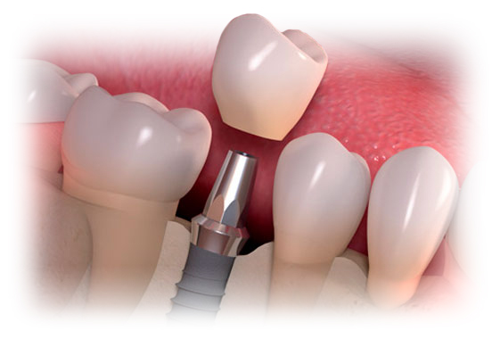
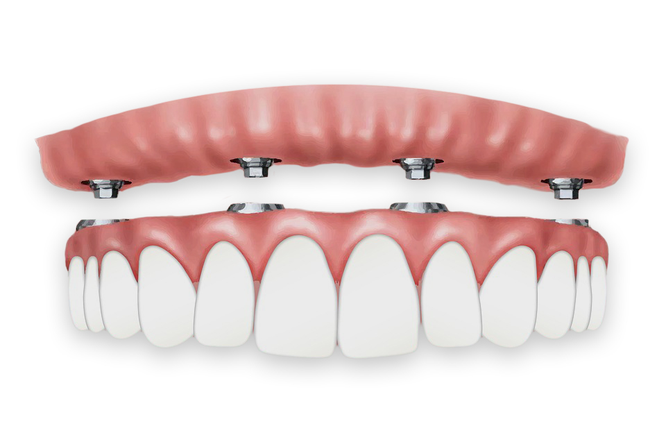
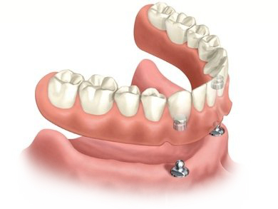

Implante
clique para retornarImplantes dentários são parafusos confeccionados em titânio e posicionados cirurgicamente no osso maxilar ou mandibular abaixo da gengiva para substituir as raízes dentárias. Uma vez colocados, permitem ao dentista montar dentes substitutos sobre eles.
Como funcionam os implantes dentários?
Por serem integrados ao osso, os implantes oferecem um suporte estável para os dentes artificiais. Próteses parciais e totais montadas sobre implantes não escorregarão nem mudarão de posição na boca, um grande benefício durante a alimentação e fala. Esta modalidade de prótese é chamada “prótese sobre implante” e confere ao paciente mais segurança em todas as funções bucais proporcionando uma situação mais natural do que pontes ou dentaduras convencionais.
Para algumas pessoas, as próteses e dentaduras comuns são simplesmente desconfortáveis ou até inviáveis, devido a pontos doloridos ou falta de adaptação a estes aparelhos. Além disso, as pontes comuns devem ser ligadas aos dentes em ambos os lados do espaço deixado pelo dente ausente. Com a colocação de implantes não é necessário preparar ou desgastar um dente natural para apoiar os novos dentes substitutos no lugar como é feito em pontes fixas convencionais.
Através do exame clínico e exames complementares como radiografia panorâmica e tomografia computadorizada iremos avaliar a possibilidade de receber um implante, além disso é preciso que você tenha gengivas saudáveis e ossos adequados para sustentá-lo. Você também deve comprometer-se a manter estas estruturas saudáveis. Uma higiene bucal meticulosa e visitas regulares ao dentista são essenciais para o sucesso a longo prazo de seus implantes.
Lembrando não existem contra indicações para pacientes que desejam fazer a cirurgia de implante dentário. Há, porém, pacientes que não apresentam estado de saúde adequado ou ideal para uma cirurgia de implante dentário. Nesses casos, o cirurgião faz uma avaliação das condições sistêmicas (com pedidos de exames laboratoriais) e das condições locais. Com isso, o profissional poderá indicar ou não a cirurgia de implante dentário, ou um momento mais oportuno para sua realização.
Implante ósseo integrado
São implantados por meio cirúrgico. O período da osseointegração (integração ao osso) leva em média 4 a 6 meses dependendo da região a receber o implante. Após este período, uma segunda cirurgia é necessária para ligar o implante ao meio bucal, nesta fase o cirurgião dentista remove a gengiva que está recobrindo o implante e finalmente, um dente artificial (ou dentes) é conectado ao implante, individualmente, ou agrupado em uma prótese que pode ser de dois tipos:
1. Prótese Protocolo
Prótese total implantosuportada e implantoretida, fixada sobre 4 a 8 implantes em média. Este tipo de prótese é parafusada e retirada apenas pelo seu dentista, é uma prótese que confere boa estética e é uma ótima opção para quem pretende fugir da dentadura, o único incoveniente é que este tipo de prótese é mais difícil de ser higienizada pois todos os dentes são conectados entre si, exigindo bastante cuidado do paciente. Pode ser feita em resina ou porcelana.
2. Prótese Overdenture
Prótese total removível sobre implante, este tipo de prótese é mais barata que a prótese protocolo porque exige menos implantes (2 a 6 em média) e é confeccionada em resina. Esta prótese é como uma dentadura, porém, tem um encaixe em uma barra que conecta os implantes à prótese, conferindo a esta mais estabilidade e retenção. Esta prótese pode ser retirada pelo paciente e por isto a sua higienização é facilitada.